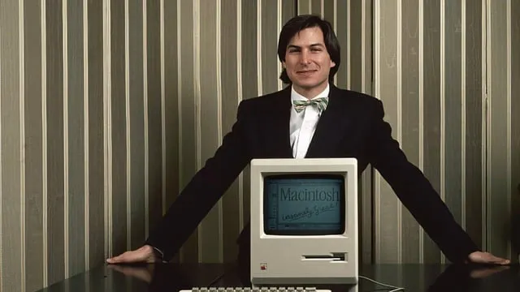
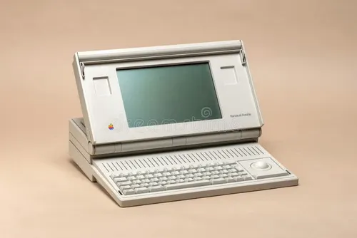
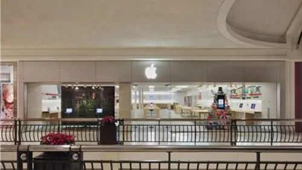

Les débuts
Steve Jobs, Steve Wozniak et Ronald Wayne fondent Apple en Californie. Leur ambition : rendre l’informatique plus accessible.
De ses débuts dans un garage à ses magasins dans le monde entier, Apple a fait évoluer la façon dont chacun utilise la technologie.

Steve Jobs, Steve Wozniak et Ronald Wayne fondent Apple en Californie. Leur ambition : rendre l’informatique plus accessible.

Le Macintosh contribue à populariser l’ordinateur personnel avec une interface graphique et une souris.

Apple ouvre ses premiers magasins pour permettre aux visiteurs de découvrir les produits, d’obtenir des conseils et de participer à des ateliers.
La présentation du premier iPhone réunit téléphone, musique et navigation Internet dans un appareil à écran tactile.
Une équipe à votre écoute pour vous accompagner dans la découverte des produits et services.
Conseillère en produits
Vous aide à comparer les appareils et à trouver celui qui correspond à vos besoins.
Spécialiste assistance
Vous accompagne dans la prise en main de vos appareils et répond à vos questions.
Responsable d’équipe
Veille à vous offrir un accueil attentif et une expérience agréable en magasin.
Équipe présentée à titre d’exemple pour cette maquette.